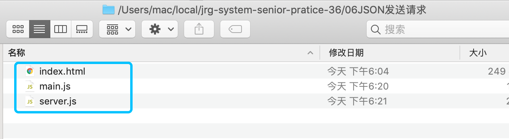
index.html:
<!DOCTYPE html><html lang="en"><head><meta charset="UTF-8"><title>首页</title><!--06-JSON发送请求--></head><body><button id="myButton">点我</button><script src="main.js"></script></body></html>main.js:
/*** Created by Administrator on 2018/1/15 0015.*/myButton.addEventListener('click',(e)=>{debuggerconsole.log("-------------")console.log(e)let request = new XMLHttpRequest()request.onreadystatechange = ()=>{debuggerif(request.readyState === 4){console.log('请求响应都完毕了')if(request.status >= 200 && request.status <300){debuggerconsole.log('说明请求成功')console.log(typeof request.responseText)console.log(request.responseText)let string = request.responseText//把符合JSON语法的字符串转换成JS对应的值let object = window.JSON.parse(string)console.log(typeof object)console.log(object)console.log('object.note')console.log(object.note)console.log('object.from')console.log(object.from)}else if(request.status >= 400){console.log('说明请求失败')}}}request.open('GET','/xxx') //配置requestrequest.send()})server.js:
var http = require('http')var fs = require('fs')var url = require('url')var port = process.env.PORT || 8888;var server = http.createServer(function(request,response){var temp = url.parse(request.url,true)var path = temp.pathnamevar query = temp.queryvar method = request.method//从这里开始看，上面不要看if(path === '/'){ //如果用户请求的是/路径let string = fs.readFileSync('./index.html')response.statusCode = 200response.setHeader('Content-Type','text/html;charset=utf-8')response.write(string)response.end()}else if(path ==='/main.js'){let string = fs.readFileSync('./main.js','utf-8')response.statusCode = 200response.setHeader('Content-Type','text/javascript;charset=utf-8')response.write(string)response.end()//主要是这里}else if(path='xxx'){debuggerresponse.statusCode = 200response.setHeader('Content-Type','text/xml')//符合JSON语法的字符串response.write(`{"note":{"to":"小谷","from":"方方","heading":"打招呼","content":"hi"}}`)response.end()}else{response.statusCode = 404response.setHeader('Content-Type','text/html;charset=utf-8')response.write('呜呜呜')response.end()}//代码结束，下面不要看console.log(method+''+request.url)})server.listen(port)console.log('监听' + port + '成功\n请用在空中转体720度然后用电饭煲打开\nhttp:localhost:'+port)进入到当前目录下:
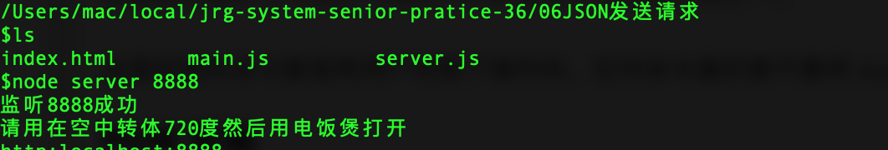
如果遇到端口占用问题,看隔壁一篇文章;
如下图:
开启服务命令:node server 8888(端口可以自己定)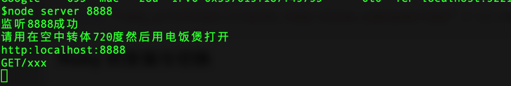
如上图所示,现在服务端处于此时状态(之前已经调试过一次了,故有GET/xxx);
下面以firefox(我自己电脑上面chrome有问题)为例开启调试:
首先确保网络这里没有任何之前的历史记录;
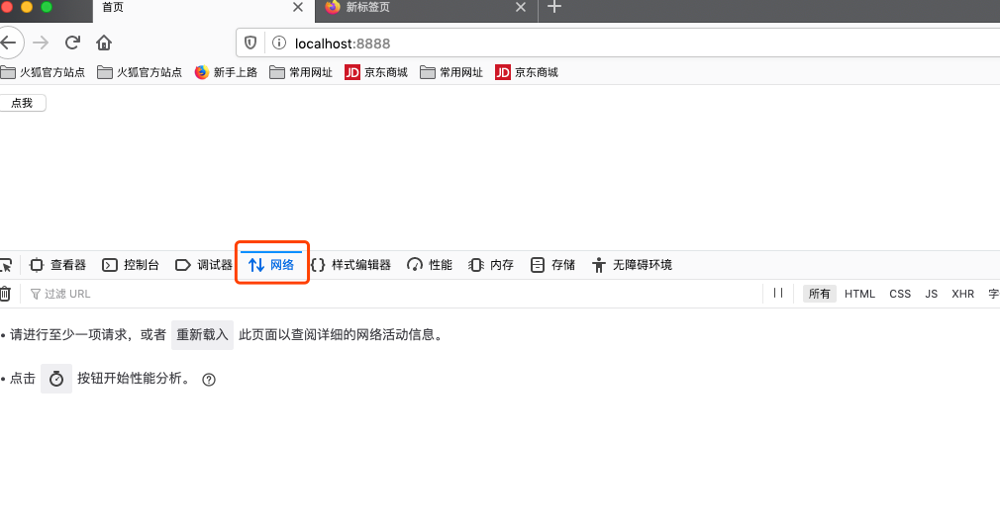
然后,点击点我那个按钮;
自动跳至调试器那边;
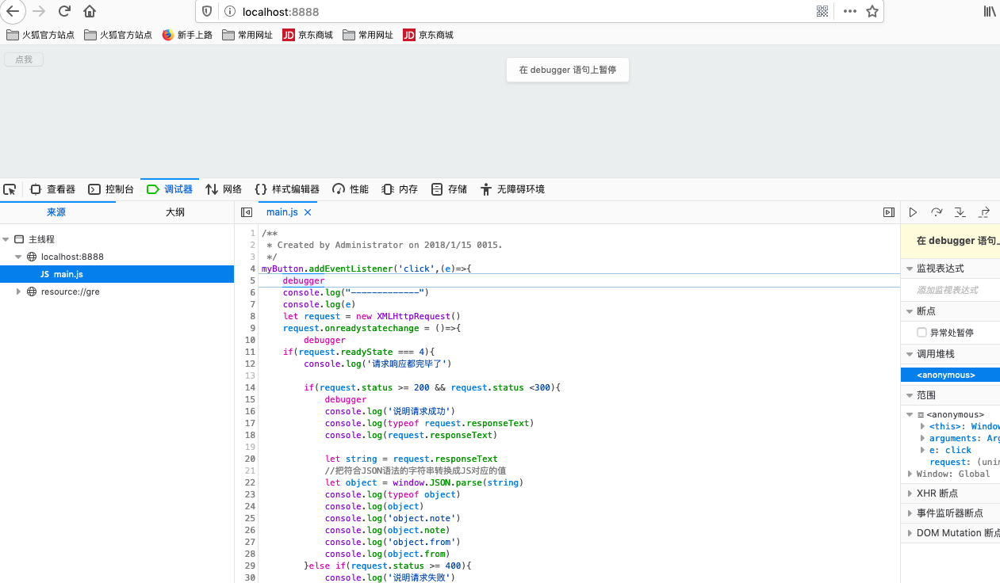
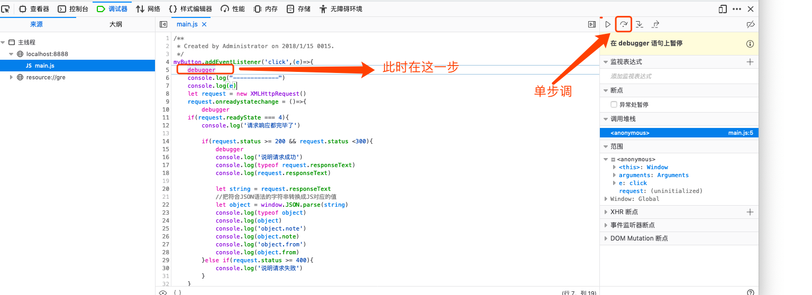
单步调试:
走至第9行时,还未走第10行就直接跳至34行:(下图标错了)
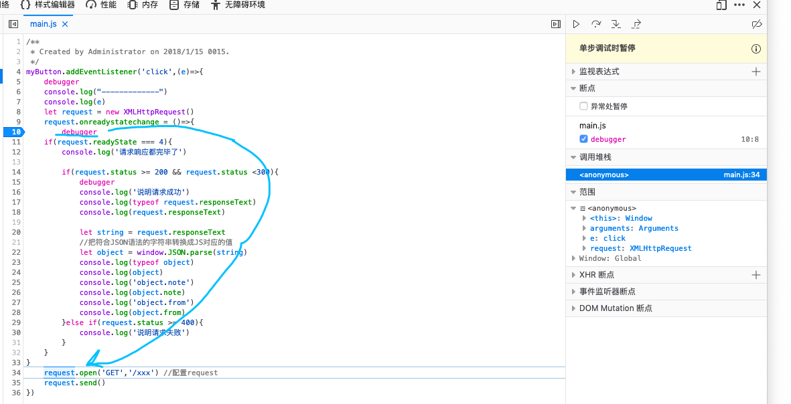
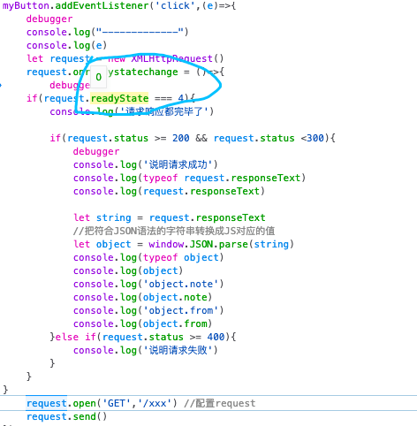
其实此时可以看得出来此时的状态码为0:
此时控制台打印出来的与上面对应:
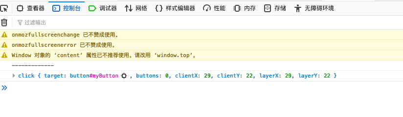
继续单步调:
从34行回到第10行,同时发现状态码变为1了！
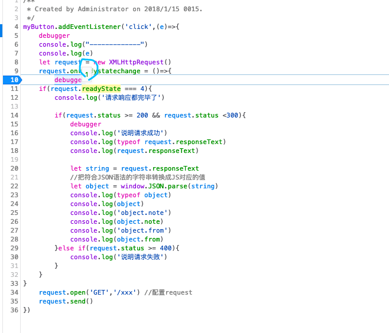
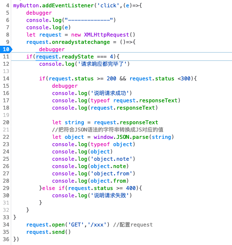
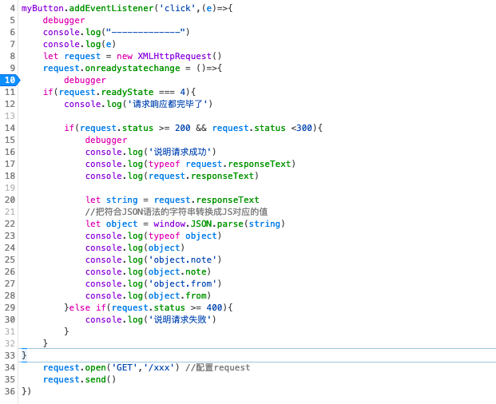
注意,到了这一步了:
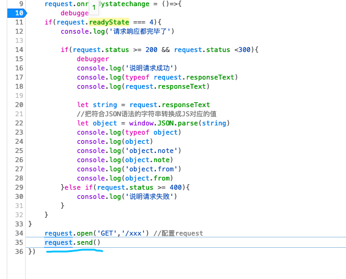
到这一步的时候注意网络:
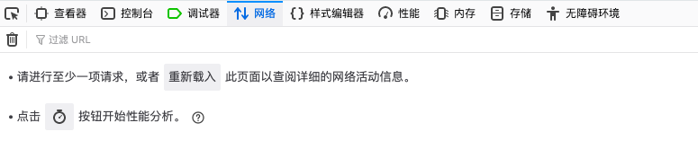
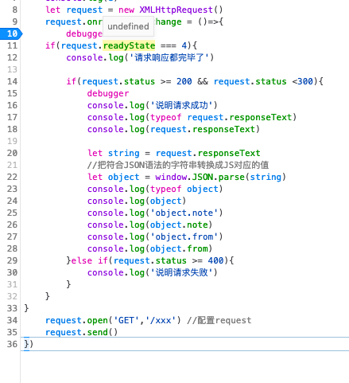
此时观察服务端和网络:
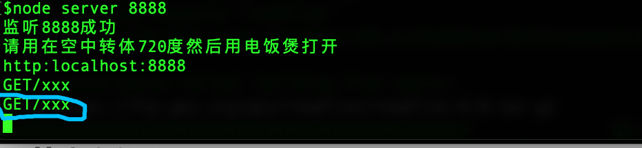
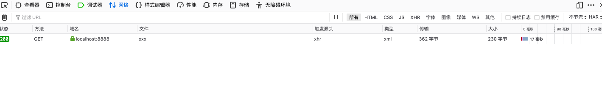
再次回到第10行:(状态码变为2)
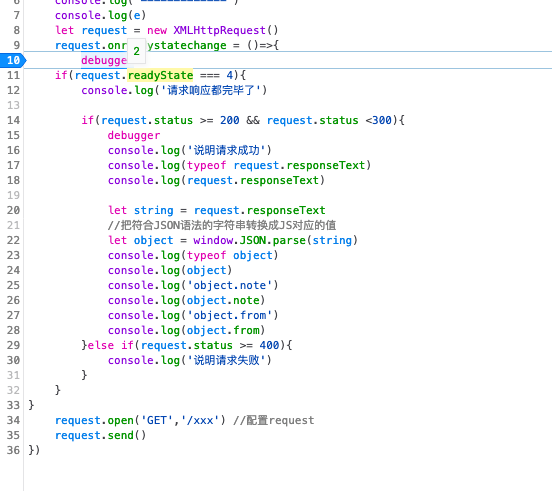
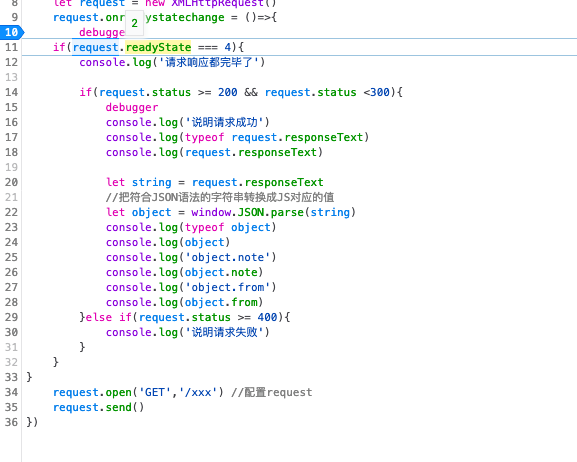
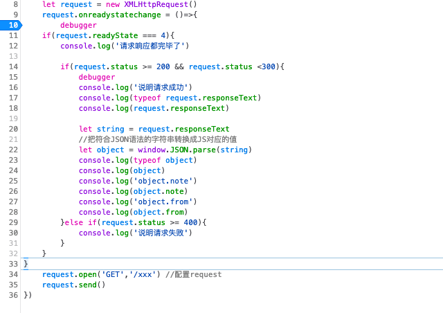
再次回到10th行;
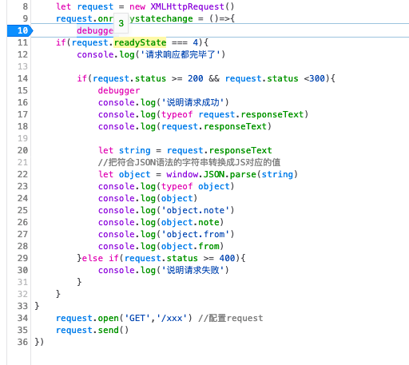
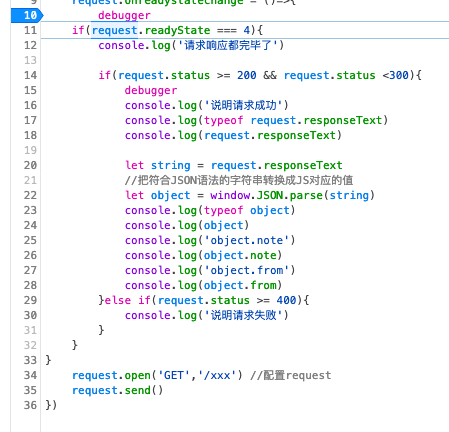
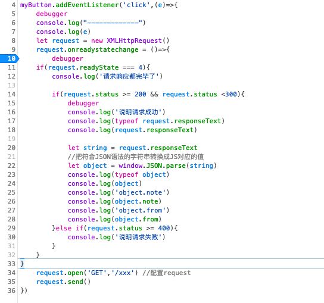
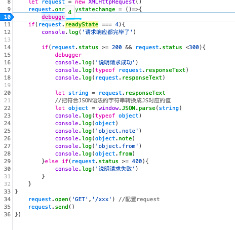
状态码为4
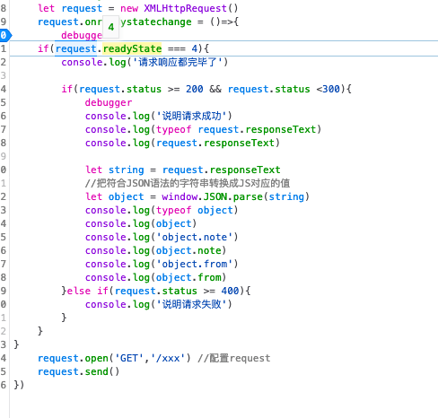
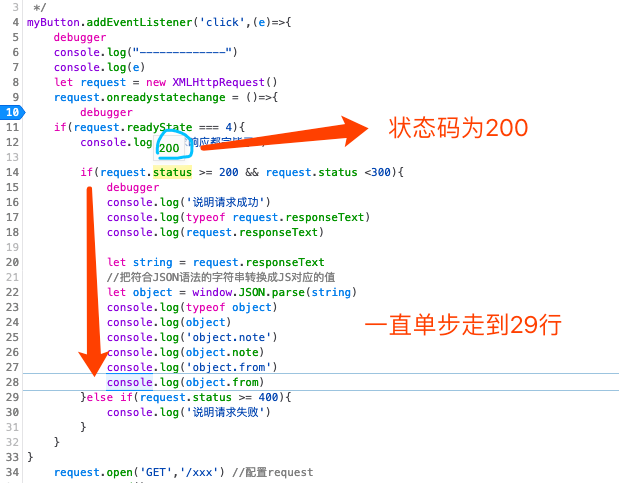
上面口误,应该是已知走到28行;
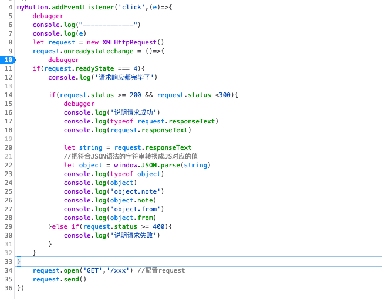
然后程序就结束了!!!
可以看看控制台都打印了什么:
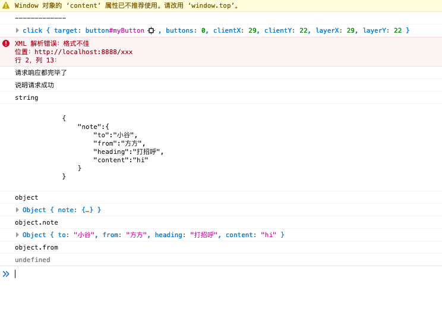
看看此时的网络:
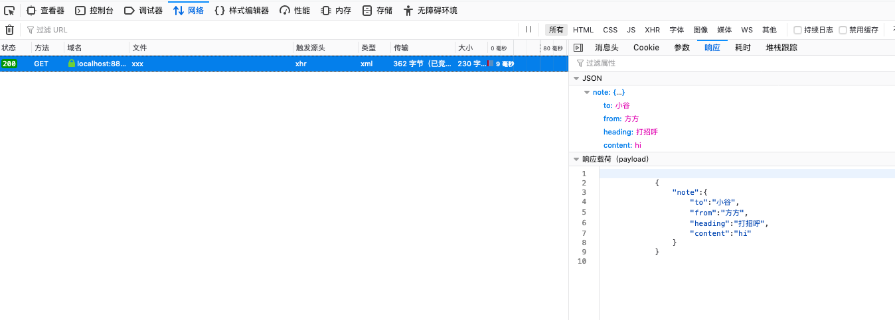
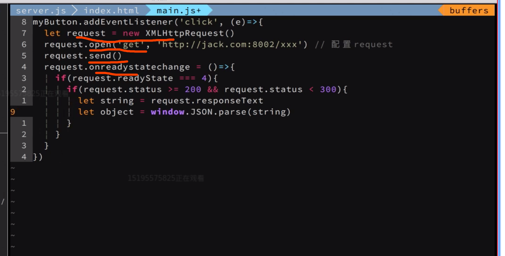
myButton.addEventlistener('click',(e)=>{let request = new XMLHttpRequest()request.open('get','http://jack.com:8002/xxx')request.send()request.onreadystatechange=()=>{if (request.readyState===4){if (request.status >= 200&& request.status<300){let string = request.request.responseTextlet object = windows.JSON.parse(string)}}}})优化版： let request = new XMLHttpRequest() request.open('get', '/xxx') // 配置request request.send() request.onreadystatechange = ()=>{ if(request.readyState === 4){ if(request.status >= 200 && request.status < 300){ console.log('说明请求成功') }else if(request.status >= 400){ console.log('说明请求失败') } } }